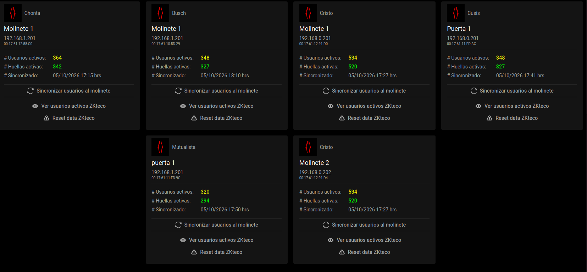

Cotización N° 002
Control de acceso con huellero externo y pantalla
Ampliación del robot de molinetes para que el nuevo modelo de molinete, que no tiene lector de huella, funcione con un huellero externo conectado a la PC de la sucursal, con apertura y asistencia automáticas. Además, una pantalla en cada sucursal muestra la foto, el nombre y los días de suscripción que le quedan a cada cliente que pasa por cualquier molinete.
Pendiente de aprobación- Cliente
- Calistenia Company
- Proveedor
- Servisofts SRL
- Fecha
- 05/10/2026
- Validez
- 30 días
- Duración
- 5 semanas
- Inversión
Bs 40.800Bs 15.000- Soporte
- Incluido en la mensualidad
- Pagos
- 3 cuotas de Bs 5.000, adelantadas
1 Situación actual
Hoy Calistenia Company controla el ingreso de sus clientes de dos formas, ambas conectadas en tiempo real a los servidores de Servisofts:
Sucursales con molinete
Molinetes ZKTeco con lector de huella integrado. El cliente pone su huella, el sistema valida su membresía, registra la asistencia y el molinete se abre, tanto al entrar como al salir.
Sucursales sin molinete
La asistencia se toma desde el teléfono, con el sistema web de control de asistencia de Servisofts.

2 El robot: cómo funciona hoy
Las sucursales no tienen IP fija, por lo que los servidores de Servisofts no pueden comunicarse directamente con los molinetes. Para resolverlo, en la PC central de cada sucursal se instala un robot: un programa que mantiene un socket con comunicación bidireccional entre el sistema y los equipos, de modo que todo está siempre sincronizado.
- 2.1 Marcación de asistencia. El cliente pone su huella en el molinete, el robot envía la petición a los servidores, se valida la membresía, se registra la asistencia y el molinete se abre. Lo mismo ocurre al salir.
- 2.2 Registro de huellas. Cuando se registra la huella de un cliente en el lector ZKTeco conectado a la PC, el robot la envía y queda guardada en el usuario en los servidores de Servisofts.
- 2.3 Sincronización. El robot mantiene en cada molinete la lista de usuarios activos y sus huellas, y el panel muestra la última sincronización de cada equipo.
3 Problemática
Se compró un molinete de otro modelo para una sucursal, y ese molinete no tiene lector de huella. Con el robot actual:
Sin identificación
El molinete no puede reconocer al cliente, porque no tiene dónde leer su huella.
Sin asistencia automática
No se registra la asistencia en el sistema al pasar por el molinete.
Sin control de membresía
No se puede bloquear el acceso a clientes con la membresía vencida.
Distancia física
La PC de la sucursal está lejos del molinete, así que un lector USB común no llega hasta él.
4 Solución propuesta
Ampliar el robot para que, además de escuchar el lector de la PC con el que se registran las huellas, escuche un segundo huellero instalado junto al molinete. Ese huellero llega a la PC por una extensión sobre cable de red. Cuando un cliente pone su huella, el robot lo identifica, registra la asistencia completa y abre el molinete.
- 4.1 Captura. El cliente pone su huella en el huellero externo instalado junto al molinete.
- 4.2 Transmisión. La lectura llega a la PC por la extensión sobre cable de red, aunque el molinete esté a varios metros.
- 4.3 Identificación. El robot compara la huella con las huellas de los usuarios activos de la sucursal, que ya tiene sincronizadas, e identifica al cliente.
- 4.4 Validación y asistencia. El robot consulta a los servidores de Servisofts: si la membresía está activa, se registra la asistencia completa (cliente, sucursal, hora, entrada o salida).
- 4.5 Apertura. El robot envía la orden de apertura al molinete y el cliente pasa. Si la membresía está vencida, el acceso se deniega y se muestra un aviso en recepción.
- 4.6 Registro de huellas sin cambios. El lector de la PC sigue registrando huellas de clientes nuevos como hoy; el robot las sincroniza para que el huellero externo las reconozca al instante.
5 Pantalla de bienvenida
Cada vez que un cliente pasa por cualquier molinete de la sucursal, tanto los ZKTeco con huella como el nuevo modelo con huellero externo, una pantalla muestra al instante:
La cara
La foto del cliente registrada en el sistema, para que recepción confirme que la huella es de quien pasa.
Quién asistió
Nombre del cliente, plan, hora de ingreso y si es entrada o salida.
Días restantes
Los días que le quedan de suscripción, en verde, amarillo (por vencer) o rojo (vencida).
Aviso de renovación
Si le quedan 7 días o menos, la pantalla invita a renovar en recepción o pagar por QR.
Asistencia registrada
Carlos M.
Ejemplo ilustrativo con datos ficticios. En producción se muestra la foto real del cliente.
- 5.5 En tiempo real. Apenas se registra la asistencia, los servidores de Servisofts envían el evento a la pantalla de esa sucursal por una conexión en vivo; aparece en menos de un segundo.
- 5.6 Sin instalar nada nuevo en el molinete. La pantalla es una página web del sistema abierta en un televisor o monitor de la sucursal (Smart TV, TV box o la misma PC por HDMI).
- 5.7 Una o varias pantallas. Cada pantalla se vincula a su sucursal y puede mostrar todos los molinetes o solo algunos (por ejemplo, una pantalla por acceso).
- 5.8 Foto del cliente. Se usa la foto que ya tiene el cliente en el sistema. Si no tiene, recepción puede tomarla con la cámara de la PC al registrar su huella.
- 5.9 Privacidad. Se muestra solo el nombre y la inicial del apellido. La foto y el mensaje desaparecen a los pocos segundos o cuando pasa el siguiente cliente.
- 5.10 También sin molinete. En las sucursales que marcan asistencia por teléfono, la misma pantalla puede mostrar a quien se registró.
6 Simulación
Así se vería la consola del robot en la sucursal con el nuevo molinete, con dos clientes: uno con la membresía activa y otro con la membresía vencida. (Ejemplo ilustrativo, con datos ficticios.)
7 Alcance funcional
Varios huelleros por robotEl robot escucha al mismo tiempo el lector de registro de la PC y uno o más huelleros externos.
Entrada y salidaCada huellero externo se configura como entrada o salida; si se quiere controlar la salida con huella, basta con agregar un segundo lector.
Identificación 1:NReconocimiento de la huella entre todos los usuarios activos de la sucursal, en menos de un segundo.
Validación de membresíaMismas reglas que los molinetes actuales: membresía activa, horarios y sucursales habilitadas.
Asistencia completaLa asistencia se registra en el sistema igual que en los molinetes ZKTeco, para que los reportes no cambien.
Apertura del molineteIntegración con el mecanismo de apertura del nuevo modelo (relé o protocolo del controlador, a confirmar en el relevamiento).
Modo sin conexiónSi se cae internet, el robot valida con su copia local de usuarios activos y envía las asistencias pendientes al reconectar.
Panel de molinetesEl nuevo equipo aparece en el panel actual con estado del huellero, usuarios activos, huellas y última sincronización.
ReutilizableLa misma solución sirve para cualquier sucursal futura que compre molinetes sin huella, en Bolivia o en otros países.
Pantalla de bienvenidaFoto, nombre y días de suscripción restantes en tiempo real, para todos los molinetes de todas las sucursales.
Foto del clienteCaptura de foto con la cámara de la PC al registrar la huella, para los clientes que aún no tienen foto.
Configuración de pantallasAlta de pantallas por sucursal, qué molinetes muestra cada una y tiempo en pantalla.
8 Hardware requerido
Lo provee Calistenia Company. Servisofts confirma los modelos compatibles en la Fase 1 antes de la compra.
| # | Equipo | Cantidad |
|---|---|---|
| 8.1 | Huellero USB compatible con ZKTecoMismo tipo que el lector de registro, para que las huellas sean compatibles | 1 por sentido (entrada / salida) |
| 8.2 | Extensor USB sobre cable de red (RJ45)Par emisor/receptor, uno junto a la PC y otro junto al molinete | 1 por huellero |
| 8.3 | Cable de red Cat6Desde la PC hasta el molinete, según la distancia en la sucursal | Según metraje |
| 8.4 | Módulo de relé USB o de redSolo si el molinete se abre por contacto seco y no tiene protocolo de apertura | 1 por molinete |
| 8.5 | Televisor o monitor con navegadorSmart TV, TV box o conectado por HDMI a la PC de la sucursal, visible desde los molinetes | 1 o más por sucursal |
| 8.6 | Cámara web en la PC de recepciónSolo si se quiere tomar fotos de clientes que aún no tienen foto | 1 por sucursal |
9 Plan de trabajo · 5 semanas
F1 · Relevamiento y hardware Semana 1
- Análisis del nuevo modelo de molinete y de su mecanismo de apertura.
- Definición y validación del huellero, el extensor y el relé.
- Medición de la distancia de la PC al molinete.
F2 · Huellero externo en el robot Semanas 1–2
- Soporte en el robot para varios lectores a la vez.
- Configuración de cada lector como registro, entrada o salida.
- Pruebas de lectura a distancia sobre el extensor.
F3 · Identificación y validación Semanas 2–3
- Identificación 1:N con las huellas sincronizadas.
- Validación de membresía y registro de asistencia en Servisofts.
F4 · Apertura del molinete Semana 3
- Integración con el mecanismo de apertura del nuevo modelo.
- Manejo de acceso denegado y avisos en recepción.
F5 · Modo sin conexión y panel Semana 3
- Copia local de usuarios activos y cola de asistencias pendientes.
- Nuevo equipo visible en el panel de molinetes.
F6 · Pantalla de bienvenida Semanas 4–5
- Página de pantalla en tiempo real: foto, nombre, plan y días restantes.
- Eventos desde todos los molinetes (con huella y con huellero externo).
- Captura de foto con cámara y configuración de pantallas por sucursal.
F7 · Instalación y pruebas Semana 5
- Instalación remota del robot en la PC de la sucursal con el nuevo molinete, con apoyo de personal local.
- Puesta en marcha de las pantallas en las sucursales con molinete.
- Pruebas con clientes reales y ajustes.
- Capacitación a recepción y documentación.
10 Inversión
10.1 Desarrollo e implementación (pago único)
| # | Fase | Duración | Horas | Monto |
|---|---|---|---|---|
| F1 | Relevamiento y hardwareAnálisis del molinete y validación de equipos | 0,5 sem. | 16 | Bs 3.200 |
| F2 | Huellero externo en el robotVarios lectores, entrada / salida | 1 sem. | 40 | Bs 8.000 |
| F3 | Identificación y validaciónHuella 1:N, membresía y asistencia | 1 sem. | 36 | Bs 7.200 |
| F4 | Apertura del molineteIntegración con el nuevo modelo | 0,5 sem. | 24 | Bs 4.800 |
| F5 | Modo sin conexión y panelCopia local, cola de asistencias, panel | 0,5 sem. | 24 | Bs 4.800 |
| F6 | Pantalla de bienvenidaPantalla en tiempo real, fotos y configuración | 1,5 sem. | 40 | Bs 8.000 |
| F7 | Instalación y pruebasRobot en la sucursal, pantallas, pruebas y capacitación | 1 sem. | 24 | Bs 4.800 |
| Subtotal | 5 sem. | 204 | Bs 40.800 | |
| Descuento especial Calistenia Company | − Bs 23.300 | |||
| Total desarrollo | Bs 17.500 |
Tarifa de referencia: Bs 200 por hora de desarrollo, sobre la que se aplica el descuento especial.
10.2 Soporte mensual · sin costo adicional
El soporte y el mantenimiento del robot, del nuevo molinete y de las pantallas quedan incluidos en la mensualidad que Calistenia Company ya paga a Servisofts SRL.
10.3 No incluido
- Hardware del punto 8 (huelleros, extensores, cable, relé, televisores, cámaras) ni el molinete.
- Cableado e instalación física en la sucursal: la realiza un técnico local, con guía de Servisofts.
- Viajes: la instalación es remota. Si se requiere presencia en sitio, pasajes y viáticos se cotizan aparte.
11 Condiciones
- Forma de pago (adelantada): 3 cuotas de Bs 5.000, según el plan de pagos acordado en reunión (punto 12).
- Pagos adelantados: todos los pagos se realizan por adelantado, antes de iniciar la etapa que cubren. Ninguna etapa comienza sin el pago correspondiente.
- Plazo: 5 semanas desde el pago inicial. La Fase 7 depende de que el hardware esté instalado en la sucursal.
- Soporte mensual: incluido en la mensualidad vigente de Calistenia Company con Servisofts SRL, sin cargo adicional.
- Garantía: 60 días posteriores a la entrega para corrección de errores sin costo.
- Compatibilidad: la integración de apertura depende del modelo del molinete; si en la Fase 1 se detecta que no es integrable, se informa antes de continuar y se devuelve el anticipo, reteniendo solo el costo proporcional de la Fase 1.
- Moneda: montos expresados en bolivianos (Bs). No incluyen impuestos de ley.
12 Plan de pagos · acuerdo en reunión
En reunión con Calistenia Company se acordó un descuento adicional sobre el total de desarrollo. La inversión queda en Bs 15.000, en 3 cuotas iguales de Bs 5.000, todas pagadas por adelantado.
12.1 Monto final
| # | Concepto | Monto |
|---|---|---|
| 10.1 | Desarrollo e implementaciónTarifa de referencia, 204 horas | Bs 40.800 |
| Descuento especial Calistenia Company | − Bs 23.300 | |
| Descuento adicional acordado en reunión | − Bs 2.500 | |
| Total a pagar | Bs 15.000 |
12.2 Cuotas
| # | Cuota | Fecha de pago | Estado | Monto |
|---|---|---|---|---|
| C1 | Primera cuotaAl aprobar la cotización, antes de iniciar la Fase 1 | Por confirmar | Pendiente | Bs 5.000 |
| C2 | Segunda cuotaAntes de iniciar la Fase 3 | Por confirmar | Pendiente | Bs 5.000 |
| C3 | Tercera cuotaAntes de iniciar la Fase 6 | Por confirmar | Pendiente | Bs 5.000 |
| Pagado | Bs 0 | |||
| Saldo pendiente | Bs 15.000 |
Próximo pago pendiente: cuota C1 de Bs 5.000, fecha por confirmar. Cada cuota se paga antes de iniciar la etapa que cubre; ninguna etapa comienza sin su pago.